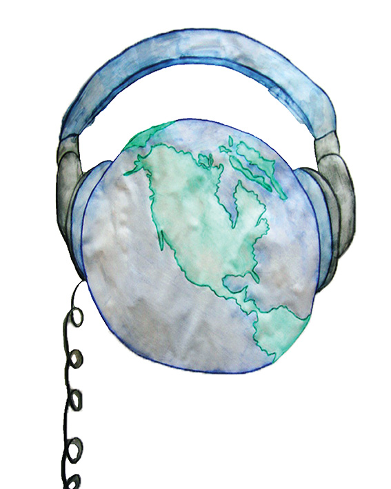
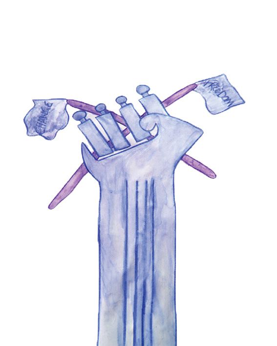
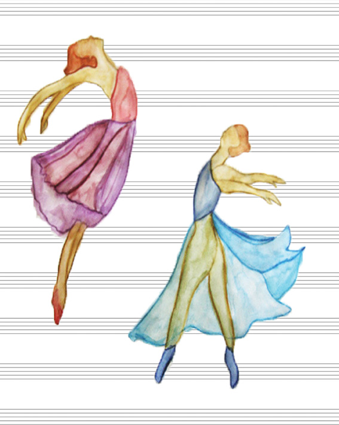
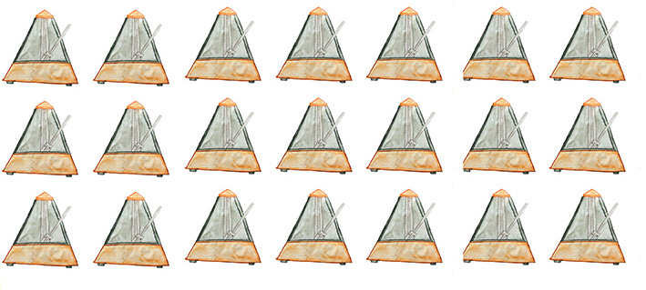

CONTOURCULTURE

Kyralee Wylde
Music the Powerhouse of Change
A personal reflection on the importance of music and its effect on human culture through time.

Have you ever listened to a song only to be completely moved by it that you had goosebumps? If your answer is no, then you may need to expand your library, but if your answer is yes, then you must already be more than aware of how much of an influence music can have on a person.
Music has been with us throughout our life; spending pocket money to buy an album for the first time is almost a childhood rite of passage. Driving your house mad from those songs played on repeat was a recurring scenario growing up, and you most-likely still know the lyrics to several of those songs from the aftermath. It is not purely the sound of music that has us enraptured, though, because where there is music, there is always emotion to accompany it.
If music contains aspects of our life, then is it safe to say that songs can be thought of as capsules? Yes, I would say so! Little capsules filled with memories. When replayed through the speakers, these memories come to life and replay themselves. Some may hold sunsets and youthful happiness, and others may contain far sadder times. Regardless of their nature, songs reconnect us to memories even years beyond their initial conception. And why is that? According to Christopher Bergland,
A contributor to Psychology today “recent studies have found that listening to music engages broad neural networks in the brain, including brain regions responsible for motor actions, emotions, and Creativity”.
Music has a number of functions. It is able to uplift, empower, relieve, and even enlighten, sometimes all at the same time. For some, it is a way of teaching and learning, used to inform others of circumstances they may be unaware of. For others, it is simply a form of therapy, used to relieve themselves of their concerns.
And why is that? Because music is not only good for evoking emotion and telling stories, it is also beneficial for our health and well-being.
According to neuroscientist & music educator Dr Anita Collins, playing music can set the brain alight in full function, strengthening it, and ultimately can influence how you apply yourself to other aspects of your life, such as with your motor skills. As if to prove this, musicians often have high skill levels of planning and strategising, and have strong attention to detail along with enhanced memory.
 
"Without music, our world would lack the texture and depth it affords us."
As our society changes, change is also inevitable within the music we hear. Presently in 2015, we have come a long way from the beginnings of rock and roll in 1954 when Bill Haley And The Comets came up with Rock Around The Clock. Moments in time like this have had revolutionary domino effects on our music, taking us to memorable eras such as Elvis’ one full of pelvic thrusting that sent the ladies wild and conservatives furious. Don’t forget Michael Jackson and his signature smooth moonwalking either, or Madonna who inspired and liberated others with her controversial lifestyle and performances.
Fashion has also been largely influenced by music, especially with the resurfacing of arguably cringe-worthy trends originating from particular genres of music which dominated certain decades. One such example being the 60’s which brought light to the ‘flower power’ era. The iconic Woodstock festival known for the drugs, alcohol, pop and rock music involved was also home to the laid back ‘hippy’ fashion known to this day. Images from this iconic festival are still used for inspiration in the fashion industry presently, and one can say it is a testament to the music and memories of that time.
Another especially influential time in both music and fashion was the 80’s, a time when big hair and bright colours full of neon and glitter took over the world of pop-culture. Additionally, MTV was launched in 1981 and people not only got to experience the expression of musicians musically but also visually with their style. MTV not only shaped fashion but also influenced consumer products and revolutionised television, with adaptations of many television series to look similar to music videos that were played on MTV.
Musicians have such a strong influence on how we think and act towards situations, and this extends to areas outside of fashion. As mentioned before, songs have the capacity to teach and enlighten, so it is not uncommon for artists to use their music as a platform for social justice. If anything, it is quite common. Artists have used their fame for good to shape society’s beliefs address inequality and circumstances where change is needed for the greater good of others. Some of the most influential philanthropic musicians known include John Lennon who promoted world peace, Bob Dylan with his efforts in the civil rights movement in the 1960’s, Bob Marley with his message of ‘love and peace’, and Bob Geldof with his political activism. And let’s not forget Bono and is humanitarian work.
Out of all the things humanity has conceived, music is definitely one of the most influential and world shaping. It has the capacity to liberate, revolutionise and cause controversy, and yet it is also a subdued form of therapy and links us to important memories and moments of our past. Without music, our world would lack the texture and depth it affords us. So, really, for those who said yes to my first question, it’s no wonder that we get goosebumps when we play the songs we do. Music is like the salt mineral to life, a taste to living you need to enhance the everyday. You could try to live without it, but for what need? At what cost?